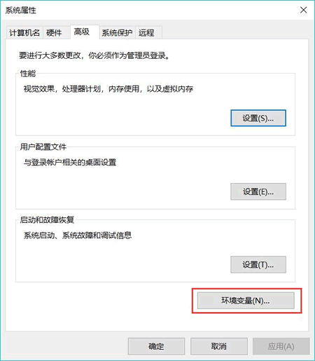
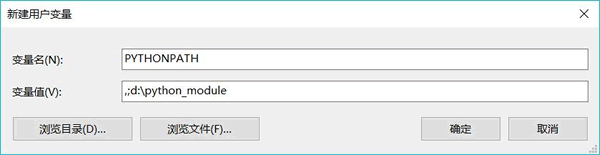

Python导入模块的3种方式（超级详细）
ModuleNotFoundError: No module named '模块名'
意思是 Python 找不到这个模块名，这是什么原因导致的呢？要想解决这个问题，读者要先搞清楚 Python 解释器查找模块文件的过程。通常情况下，当使用 import 语句导入模块后，Python 会按照以下顺序查找指定的模块文件：
- 在当前目录，即当前执行的程序文件所在目录下查找；
- 到 PYTHONPATH（环境变量）下的每个目录中查找；
- 到 Python 默认的安装目录下查找。
以上所有涉及到的目录，都保存在标准模块 sys 的 sys.path 变量中，通过此变量我们可以看到指定程序文件支持查找的所有目录。换句话说，如果要导入的模块没有存储在 sys.path 显示的目录中，那么导入该模块并运行程序时，Python 解释器就会抛出 ModuleNotFoundError（未找到模块）异常。
解决“Python找不到指定模块”的方法有 3 种，分别是：
- 向 sys.path 中临时添加模块文件存储位置的完整路径；
- 将模块放在 sys.path 变量中已包含的模块加载路径中；
- 设置 path 系统环境变量。
不过，在详细介绍这 3 种方式之前，为了能更方便地讲解，本节使用前面章节已建立好的 hello.py 自定义模块文件（D:\python_module\hello.py）和 say.py 程序文件（C:\Users\mengma\Desktop\say.py，位于桌面上），它们各自包含的代码如下：
#hello.py
def say ():
print("Hello,World!")
#say.py
import hello
hello.say()
显然，hello.py 文件和 say.py 文件并不在同一目录，此时运行 say.py 文件，其运行结果为：
Traceback (most recent call last):
File "C:\Users\mengma\Desktop\say.py", line 1, in <module>
import hello
ModuleNotFoundError: No module named 'hello'
导入模块方式一：临时添加模块完整路径
模块文件的存储位置，可以临时添加到 sys.path 变量中，即向 sys.path 中添加 D:\python_module（hello.py 所在目录），在 say.py 中的开头位置添加如下代码：
import sys
sys.path.append('D:\\python_module')
注意：在添加完整路径中，路径中的 '\' 需要使用 \ 进行转义，否则会导致语法错误。再次运行 say.py 文件，运行结果如下：
Hello,World!
可以看到，程序成功运行。在此基础上，我们在 say.py 文件中输出 sys.path 变量的值，会得到以下结果：['C:\\Users\\mengma\\Desktop', 'D:\\python3.6\\Lib\\idlelib', 'D:\\python3.6\\python36.zip', 'D:\\python3.6\\DLLs', 'D:\\python3.6\\lib', 'D:\\python3.6', 'C:\\Users\\mengma\\AppData\\Roaming\\Python\\Python36\\site-packages', 'D:\\python3.6\\lib\\site-packages', 'D:\\python3.6\\lib\\site-packages\\win32', 'D:\\python3.6\\lib\\site-packages\\win32\\lib', 'D:\\python3.6\\lib\\site-packages\\Pythonwin', 'D:\\python_module']
该输出信息中，红色部分就是临时添加进去的存储路径。需要注意的是，通过该方法添加的目录，只能在执行当前文件的窗口中有效，窗口关闭后即失效。导入模块方式二：将模块保存到指定位置
如果要安装某些通用性模块，比如复数功能支持的模块、矩阵计算支持的模块、图形界面支持的模块等，这些都属于对 Python 本身进行扩展的模块，这种模块应该直接安装在 Python 内部，以便被所有程序共享，此时就可借助于 Python 默认的模块加载路径。Python 程序默认的模块加载路径保存在 sys.path 变量中，因此，我们可以在 say.py 程序文件中先看看 sys.path 中保存的默认加载路径，向 say.py 文件中输出 sys.path 的值，如下所示：
['C:\\Users\\mengma\\Desktop', 'D:\\python3.6\\Lib\\idlelib', 'D:\\python3.6\\python36.zip', 'D:\\python3.6\\DLLs', 'D:\\python3.6\\lib', 'D:\\python3.6', 'C:\\Users\\mengma\\AppData\\Roaming\\Python\\Python36\\site-packages', 'D:\\python3.6\\lib\\site-packages', 'D:\\python3.6\\lib\\site-packages\\win32', 'D:\\python3.6\\lib\\site-packages\\win32\\lib', 'D:\\python3.6\\lib\\site-packages\\Pythonwin']
上面的运行结果中，列出的所有路径都是 Python 默认的模块加载路径，但通常来说，我们默认将 Python 的扩展模块添加在lib\site-packages 路径下，它专门用于存放 Python 的扩展模块和包。所以，我们可以直接将我们已编写好的 hello.py 文件添加到
lib\site-packages 路径下，就相当于为 Python 扩展了一个 hello 模块，这样任何 Python 程序都可使用该模块。移动工作完成之后，再次运行 say.py 文件，可以看到成功运行的结果：
Hello,World!
导入模块方式三：设置环境变量
PYTHONPATH 环境变量（简称 path 变量）的值是很多路径组成的集合，Python 解释器会按照 path 包含的路径进行一次搜索，直到找到指定要加载的模块。当然，如果最终依旧没有找到，则 Python 就报 ModuleNotFoundError 异常。由于不同平台，设置 path 环境变量的设置流程不尽相同，因此接下来就使用最多的 Windows、Linux、Mac OS X 这 3 个平台，给读者介绍如何设置 path 环境变量。
在 Windows 平台上设置环境变量
首先，找到桌面上的“计算机”（或者我的电脑），并点击鼠标右键，单击“属性”。此时会显示“控制面板\所有控制面板项\系统”窗口，单击该窗口左边栏中的“高级系统设置”菜单，出现“系统属性”对话框，如图 1 所示。
图 1 系统属性对话框
如图 1 所示，点击“环境变量”按钮，此时将弹出图 2 所示的对话框：

图 2 环境变量对话框
如图 2 所示，通过该对话框，就可以完成 path 环境变量的设置。需要注意的是，该对话框分为上下 2 部分，其中上面的“用户变量”部分用于设置当前用户的环境变量，下面的“系统变量”部分用于设置整个系统的环境变量。
通常情况下，建议大家设置设置用户的 path 变量即可，因为此设置仅对当前登陆系统的用户有效，而如果修改系统的 path 变量，则对所有用户有效。
这里我们选择设置当前用户的 path 变量。单击用户变量中的“新建”按钮， 系统会弹出如图 3 所示的对话框。对于普通用户来说，设置用户 path 变量和系统 path 变量的效果是相同的，但 Python 在使用 path 变量时，会先按照系统 path 变量的路径去查找，然后再按照用户 path 变量的路径去查找。

图 3 新建PYTHONPATH环境变量
其中，在“变量名”文本框内输入 PYTHONPATH，表明将要建立名为 PYTHONPATH 的环境变量；在“变量值”文本框内输入
.;d:\python_ module。注意，这里其实包含了两条路径（以分号 ；作为分隔符）：
- 第一条路径为一个点（.），表示当前路径，当运行 Python 程序时，Python 将可以从当前路径加载模块；
-
第二条路径为
d:\python_ module，当运行 Python 程序时，Python 将可以从d:\python_ module中加载模块。
然后点击“确定”，即成功设置 path 环境变量。此时，我们只需要将模块文件移动到和引入该模块的文件相同的目录，或者移动到
d:\python_ module 路径下，该模块就能被成功加载。在 Linux 上设置环境变量
启动 Linux 的终端窗口，进入当前用户的 home 路径下，然后在 home 路径下输入如下命令：ls - a
该命令将列出当前路径下所有的文件，包括隐藏文件。Linux 平台的环境变量是通过 .bash_profile 文件来设置的，使用无格式编辑器打开该文件，在该文件中添加 PYTHONPATH 环境变量。也就是为该文件增加如下一行：
#设置PYTHON PATH 环境变量
PYTHONPATH=.:/home/mengma/python_module
/home/mengma/python_module（mengma 是在 Linux 系统的登录名）。在完成了 PYTHONPATH 变量值的设置后，在 .bash_profile 文件的最后添加导出 PYTHONPATH 变量的语句。
#导出PYTHONPATH 环境变量
export PYTHONPATH
source.bash_profile
这两种方式都是为了运行该文件，使在文件中设置的 PYTHONPATH 变量值生效。在成功设置了上面的环境变量之后，接下来只要把前面定义的模块（Python 程序）放在与当前所运行 Python 程序相同的路径中（或放在
/home/mengma/python_module 路径下），该模块就能被成功加载了。在Mac OS X 上设置环境变量
在 Mac OS X 上设置环境变量与 Linux 大致相同（因为 Mac OS X 本身也是类 UNIX 系统）。启动 Mac OS X 的终端窗口（命令行界面），进入当前用户的 home 路径下，然后在 home 路径下输入如下命令：ls -a
该命令将列出当前路径下所有的文件，包括隐藏文件。Mac OS X 平台的环境变量也可通过，bash_profile 文件来设置，使用无格式编辑器打开该文件，在该文件中添加 PYTHONPATH 环境变量。也就是为该文件增加如下一行：
#设置PYTHON PATH 环境变盘
PYTHONPATH=.:/Users/mengma/python_module
/Users/mengma/python_module（memgma 是作者在 Mac OS X 系统的登录名）。在完成了 PYTHONPATH 变量值的设置后，在 .bash_profile 文件的最后添加导出 PYTHONPATH 变量的语句。
#导出PYTHON PATH 环境变量
export PYTHONPATH
source.bash_profile
这两种方式都是为了运行该文件，使在文件中设置的 PYTHONPATH 变量值生效。在成功设置了上面的环境变量之后，接下来只要把前面定义的模块（Python 程序）放在与当前所运行 Python 程序相同的路径中（或放在
Users/mengma/python_module 路径下），该模块就能被成功加载了。关注公众号「站长严长生」，在手机上阅读所有教程，随时随地都能学习。内含一款搜索神器，免费下载全网书籍和视频。

微信扫码关注公众号